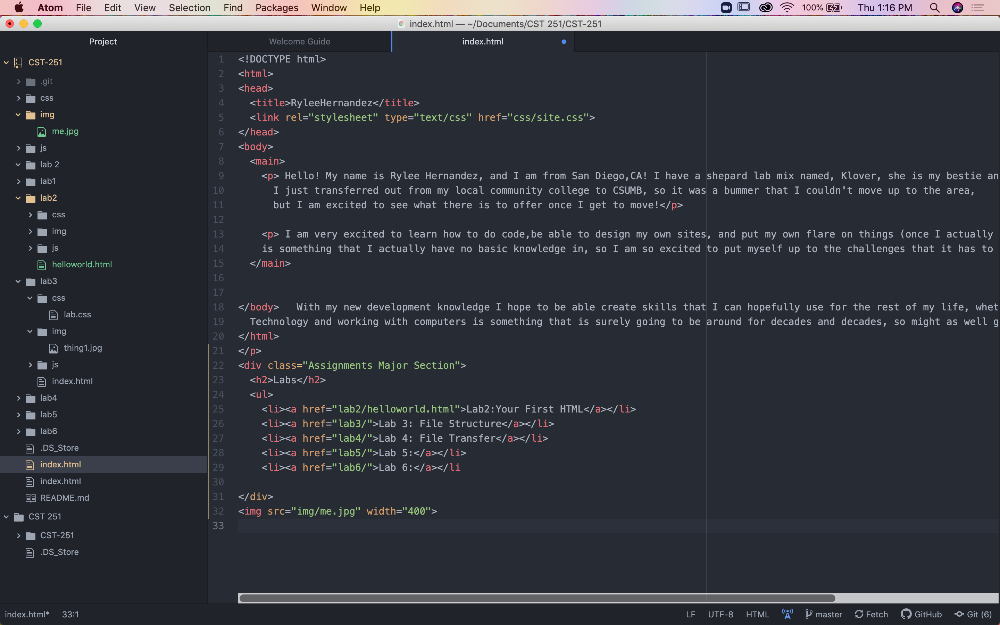
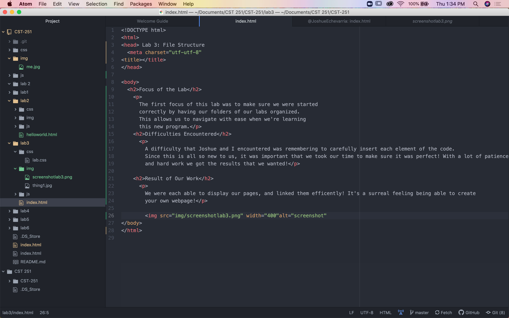
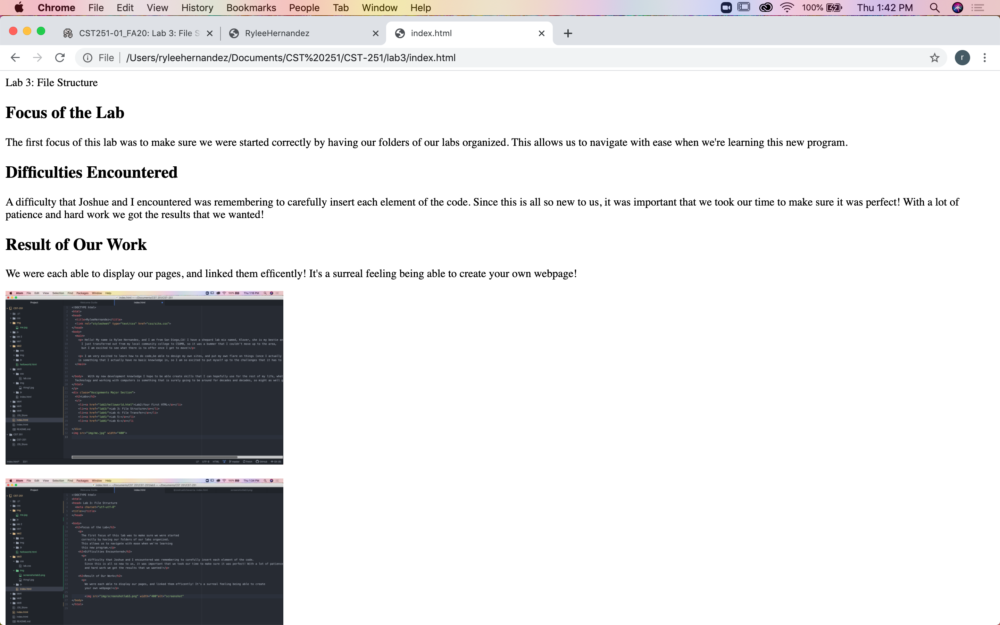

The first focus of this lab was to make sure we were started correctly by having our folders of our labs organized. This allows us to navigate with ease when we're learning this new program.
A difficulty that Joshue and I encountered was remembering to carefully insert each element of the code. Since this is all so new to us, it was important that we took our time to make sure it was perfect! With a lot of patience and hard work we got the results that we wanted! When adding the photos we also had to make sure that all the brackets are closed, or else a new photo will never be read.
We were each able to display our pages, and linked them efficently! It's a surreal feeling being able to create your own webpage!

screenshot of atom

screenshot of organization files

lab 3 in new browser